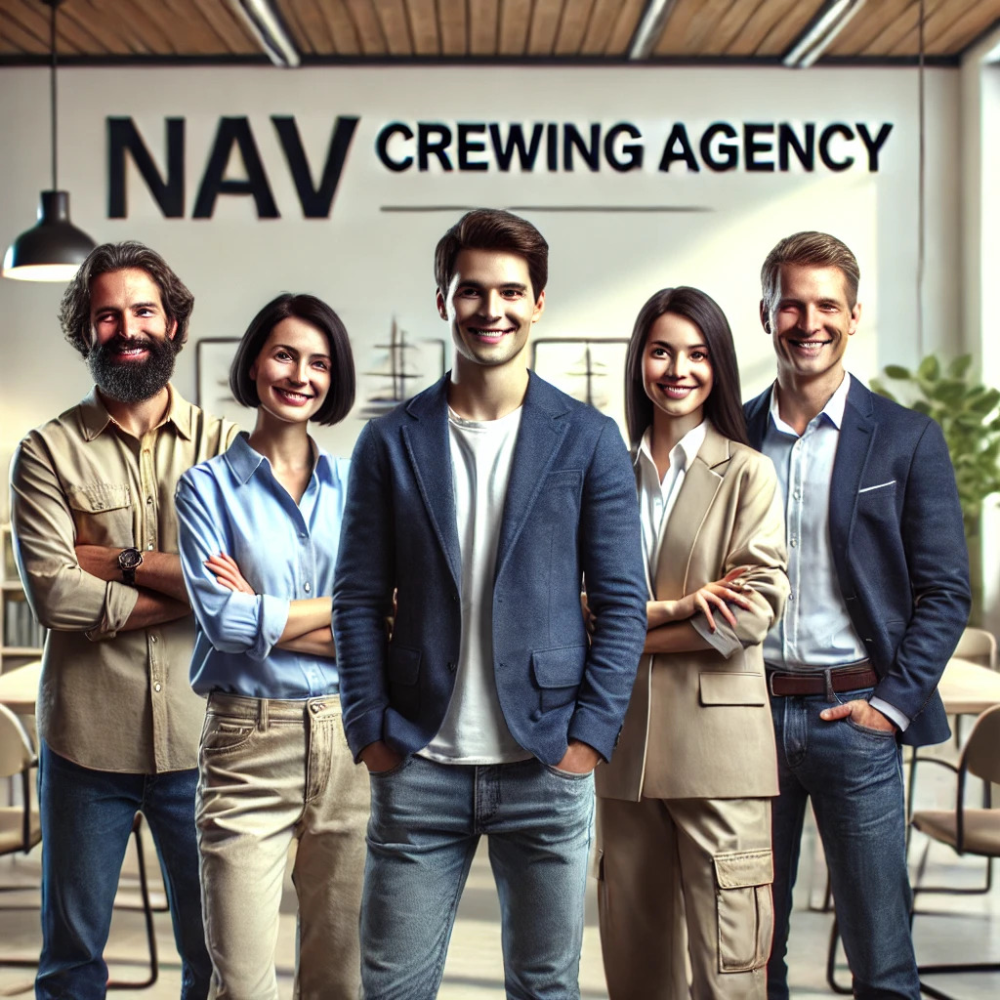
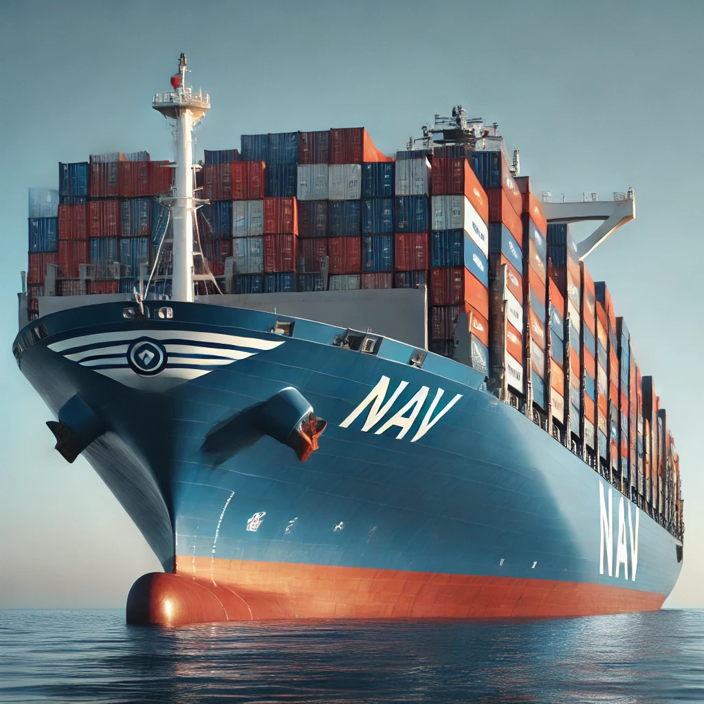

About Us
NAV Crewing Agency is a leading maritime staffing company that has been dedicated to providing professional crew management services to the shipping industry since its inception. Founded with the mission to bridge the gap between talented seafarers and vessel operators, NAV Crewing Agency quickly established itself as a reliable and innovative partner for both shipowners and maritime professionals.
Our Story
The journey of NAV Crewing Agency began over a decade ago when a small group of maritime enthusiasts and experienced professionals recognized the growing demand for skilled crew members in the rapidly expanding global shipping industry. Combining their expertise in maritime operations and human resource management, they established NAV Crewing Agency with a singular vision: to offer quality staffing solutions while enhancing the professional experience of seafarers. Starting with just a handful of vessels, the agency quickly gained a reputation for excellence, reliability, and a commitment to safety and compliance. Our proactive approach to recruitment, training, and crew management soon attracted attention from ship owners and operators across Europe, and within a few years, NAV Crewing Agency expanded its reach to cover key maritime hubs throughout the continent.
Our Growth
Today, NAV Crewing Agency proudly manages a fleet of several dozen vessels operating across various sectors, including cargo ships, tankers, offshore platforms, and luxury yachts. We specialize in providing highly trained and qualified crew members, from deckhands to senior officers, ensuring that each vessel is staffed with individuals who meet the highest industry standards. Our team of experts works diligently to match the right talent with the right opportunities, ensuring that both ship operators and crew members benefit from a smooth and efficient staffing process. With a deep understanding of international maritime laws and regulations, we take care of all the logistics, including crew recruitment, training, certifications, and contracts, allowing our clients to focus on what they do best – running their vessels.
Our Vision
At NAV Crewing Agency, we believe in building long-lasting relationships based on trust, integrity, and mutual respect. As we continue to grow and expand our presence across Europe, we are committed to providing the best career opportunities for seafarers while delivering unparalleled service to our clients. We are proud to contribute to the success of the global maritime industry by supplying highly skilled and motivated crew members who ensure the safe and efficient operation of vessels worldwide.
Why Choose NAV Crewing Agency?
- Experienced & Professional Crew:
- We provide a wide range of highly trained maritime professionals, from entry-level to senior positions, with expertise across various sectors of the shipping industry.
- Commitment to Safety & Compliance:
- We prioritize the safety and well-being of our crew members, ensuring they are equipped with the necessary certifications and training to meet international standards.
- Global Reach with Local Expertise:
- With offices across Europe and a network of partners worldwide, we can meet the staffing needs of clients in diverse geographical locations.
- Tailored Solutions:
- We offer flexible crewing solutions to meet the specific needs of each client, ensuring that the right crew is assigned to the right vessel for optimal performance.
NAV Crewing Agency is more than just a staffing provider; we are a trusted partner dedicated to the success and growth of our clients and the career advancement of our crew members. As we continue to evolve, we remain focused on our core values of excellence, reliability, and professionalism, striving to be the best in the maritime industry.